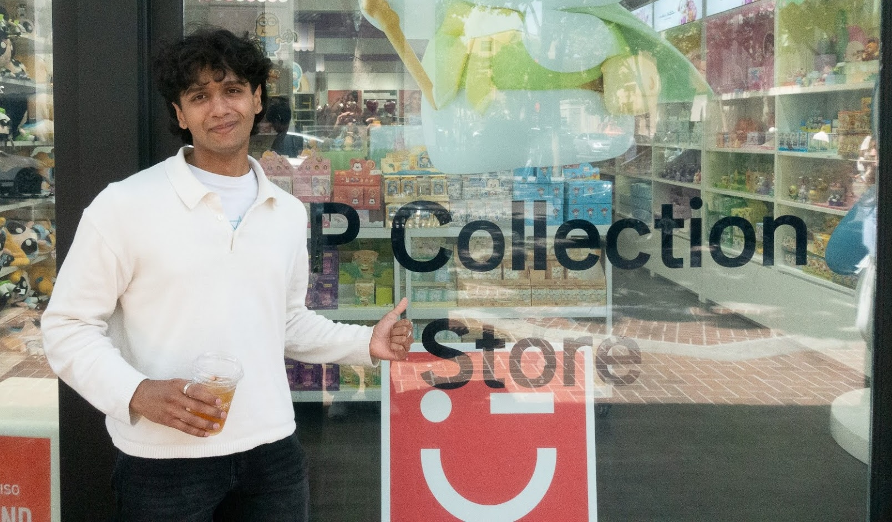

About Me
Hey! I'm Amit Saha, a fourth-year undergraduate student at Georgia Tech studying computer science and mathematics. If you'd like to reach out, find my contact information here.
Research: Broadly, I'm interested in the theoretical foundations of trustworthy and responsible learning. More specifically, I like to exploit tools from
{theoretical computer science, high dimensional probability, algorithmic sampling}
as primitives to understand problems and fundamental limits in
{machine learning theory, online learning, decision-making},
usually with consideration for differential privacy ∈ {notions of trusthworthiness}. Learn more about my current projects and previous work here.
Ph.D. applications: I plan to apply to Ph.D. programs for Fall 2027 admission.
Currently, I've been fortunate to work with Pan Li, Juba Ziani, and Salil Vadhan (via OpenDP). I've also had the pleasure of collaborating closely with Eli Chien, Yinan Huang, Jan Schuchardt, Vishwak Srinivasan, Siddharth Mitra, Michael Shoemate, and Walter McKelvie. I'm deeply grateful for the guidance and support I've received from them.
Outside of my main research interests, I am deeply invested in {AI safety, autoformalization for mathematics via language models}, although I do not actively work on research in these fields. To this end, I help organize the AI Safety Initiative at Georgia Tech, and regularly make use of autoformalization tools for my own (mathematical) research.
Academics: I credit much of my research to ideas first learnt in different classes at Georgia Tech. If you're interested, check out my coursework here.
Industry Experience: I spent two wonderful summers working at Adobe on the Camera Raw team as a machine learning research intern under Michelle Qi and David Franzen.
Everything else: At last — nonacademically — I enjoy making pizza, reading, and listening to music all the time.